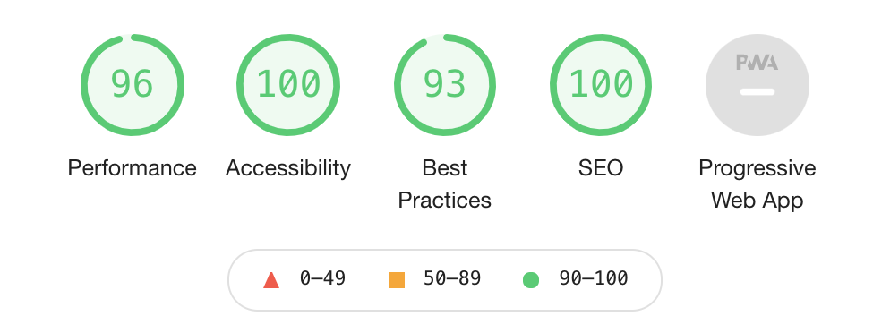

The last time I changed something big on my site was 5+ years ago. I was lazy so I used Hugo with the Coder theme. It was a mild increment over whatever I had before, which was just a cleaned up and colourful version of Left from like 5 years prior. Anyway, what I’m saying is: this website needed some love.
But why else?
I used to put up more content, or at least I really wanted to. Then I put up less content, so I transitioned to more of a linktree vibe. Originally the home page was just a listing of posts with some copy sprinkled in. As the pandemic hit, I also transitioned into management, and was writing less and less, so having a site focused on one post every 5 years was ridiculous.
On top of that, last year I started experimenting with generative ai and dabbled with making generative art and I thought it was sad I wasn’t showing that anywhere on the site! The beauty of generative art is that you can just keep generating it over and over again, and the boring site that once looked the same everytime to loaded it. No more!
Lighthouse?

Seems fine. The 93 is because I’m running this on localhost, where I
don’t have
https. I’ll
double check it once after I deploy, but that 96 on performance is
sitting fine with me given that I (again) don’t minify anything on this
site.
I still don’t have a service worker installed because last time I did it cached things into oblivion, and I make hella typos on my posts and it was a bad time. Who even reads this site? Why would you want it offline? You don’t.
Colours
I tried really hard to add some dreamy pastel blobs randomly in the page. The thing that worked the most was “blurred spans positioned absolutely” which makes browsers and my soul cry. I also didn’t want to use images, because … I didn’t. Downloading bytes of background images? In this economy???
With pastels out of the way, I went for the exact opposite: bright and patterned. I had recently stumbled upon the Bauhaus aesthetic. Bauhaus aesthetics are all about grids and bold, simple colours – I don’t know if I did it justice, but I certainly tried.
The blog and project pages are listings of links which I always struggle with and 2021 didn’t fix that. If all the text is a link, and links are meant to be bright, then most of the page is a bright, unreadable scream of colours. So on these pages, the default href styles are gone, and I added some hatching on hover only. That way there’s splotches of colour, but they’re mostly out of the way.
The generative art bits
I experimented with a bunch of basic generative art algorithms for the pages, like animated Perlin noise and grid-based randomness. In the end, I did a variation on a pretty standard Truchet tile grid that you see a lot in beginner generative art tutorials: you have a grid of cells, and each cell can be one of the 4 orientations of a quarter-circle. After staring a bunch at these quarter circles, some started looking like objects: a tulip, a boat, a bird. I kept one of each and painted them in black, so that they pop out.
An accidental p5.js mini-polyfill
I do all of my generative art in p5.js and canvas-sketch because I want to write the least amount of canvas code I can, and most of the time I do that offline and for printing on paper. In this case though this code would live on every single page, and p5.js comes in at a couple hundred kb, most of which I am not actually using. I am a lazy woman with a lot of napping to do; I don’t want to rewrite any of my already written p5.js code! So I ended up writing a little small object that implements only the bits of the p5.js API I was using. Cute eh?
let context;
window.p = {
PI: Math.PI,
HALF_PI: Math.PI / 2,
random: (a, b) => {
if (a !== undefined && b !== undefined) {
return Math.floor(Math.random() * b) + a;
} else {
// Assume a is an array.
const i = Math.floor(Math.random() * a.length);
return a[i];
}
},
fill: (c) => context.fillStyle = c,
stroke: (c) => context.strokeStyle = c,
noFill: () => context.fillStyle = 'transparent',
noStroke: () => context.strokeStyle = 'transparent',
push: () => context.save(),
pop: () => context.restore(),
translate: (x,y) => context.translate(x,y),
scale: (x,y) => context.scale(x,y),
rect: (x,y,w,h) => {
context.fillRect(x, y, w, h);
context.strokeRect(x, y, w, h);
},
circle: (x,y,d) => {
context.beginPath();
context.arc(x, y, d/2, 0, Math.PI * 2, false);
context.fill();
context.stroke();
},
arc: (x, y, w, h, start, stop, slice=false) => {
context.beginPath();
if (!slice) {
context.moveTo(x, y);
}
context.arc(x, y, w/2, start, stop);
context.closePath();
context.fill();
context.stroke();
}
}
Then you get to write your
setup and
draw functions
in almost the same way you would in p5.js.
let context;
window.p = {...}
function mySketch(p) {
function setup() {
// ...
draw();
}
function draw() {
//
}
}
// "Instantiate" our weird "p5.js" "instance" mode.
mySketch(p)
Woof, you made it this far? Slow news day, eh?